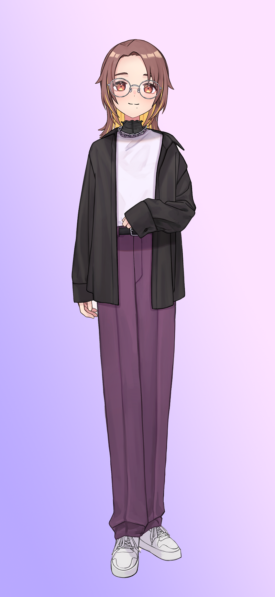
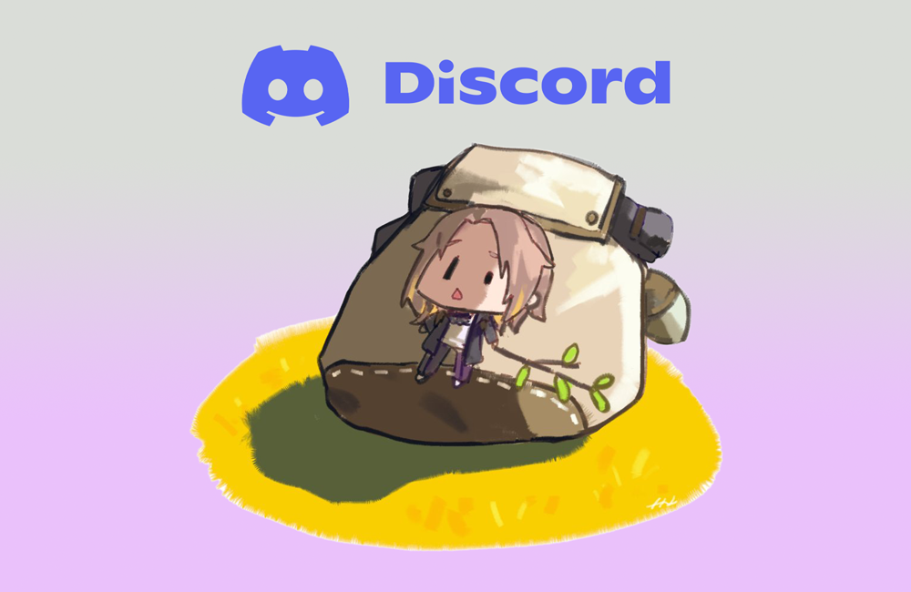

蜘蛛糸まな
Ruby on Rails をメインにしたウェブアプリケーションエンジニア。
Rails 歴は 10 年以上、現在は会社員として働きながら、個人として配信活動も行っている。
2017 年末に VTuber を知り、その文化に触れ、より近い場所で文化を楽しむために 2019 年 1 月より VTuber としての活動を開始。
- RAILS
- 10 年以上
- VTUBER
- 2019.01〜
- STREAM
- Twitch / YouTube

運用しているサービス
個人で開発・運用している Web サービス、Windows アプリ、Chrome 拡張機能です。
- 01Web Tool
Tier Table Maker
手持ちの画像をドラッグ&ドロップで S〜D の 5 段に振り分け、タイトル付きの Tier 表を PNG で保存できる Web ツール。画像はブラウザ内で処理し、ログインも不要です。kumoito.dev/tier-table-maker
↗ - 02Community
グラコネ
グラブルの騎空士をつなぐコミュニティサイト。騎空団と団員の募集、Discord サーバー探し、高難度マルチの固定パーティー募集、攻略動画の検索ができます。基本機能は無料です。gbf-connect.com
↗ - 03Web Tool
Traktor セットリストジェネレーター
Traktor の History（.nml）を読み込み、BPM や KEY 付きの再生順セットリストを作る Web ツール。不要な曲を除いて、CSV と SNS 向けカード画像で書き出せます。ファイルはブラウザ内だけで処理します。kumoito.dev/setlist-generator-for-traktor
↗ - 04Chrome Extension
Stream Audio Tuner
YouTube と Twitch のゲーム配信で、配信者の声とゲーム音のバランスを調整できる Chrome 拡張機能。5 種類のプリセットとスライダーで操作でき、設定はチャンネルごとに端末内へ保存し、外部には送信しません。Chrome ウェブストア
↗ - 05Windows App
Katate（片手）
左手の WASD でページをめくり、Q / E で次の巻へ進める Windows 用の漫画ビューワー。zip / cbz / rar / 7z や画像フォルダーを展開せずに、右綴じの見開きで読めます。無料。katate.kumoito.dev
↗ - 06Windows App
ComicShrinker
zip / cbz / rar / 7z などの画像書庫を、リサイズせず画質そのままに小さくする Windows 用アプリ。中の JPEG や PNG をピクセル同一のまま符号化し直し、元の書庫は上書きしません。無料。comicshrinker.kumoito.dev
↗
各種リンク



蜘蛛糸まな
コミュニティサーバー
蜘蛛糸まなが運営する Discord サーバーです。きたる Twitter 終焉の日に備え、友人・知人とコミュニケーションを取ることができる場を作ろうと思い開設しました。どなたでもご自由にご参加いただけます。
Discord に参加する